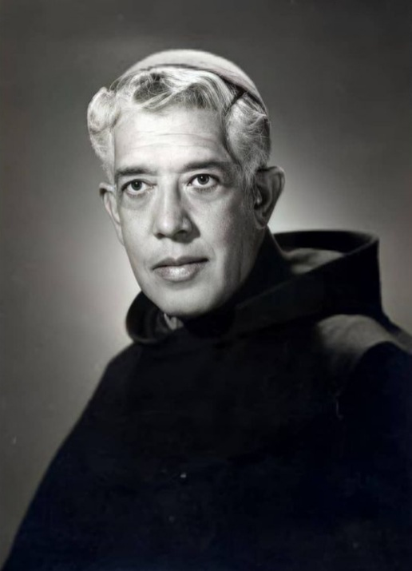
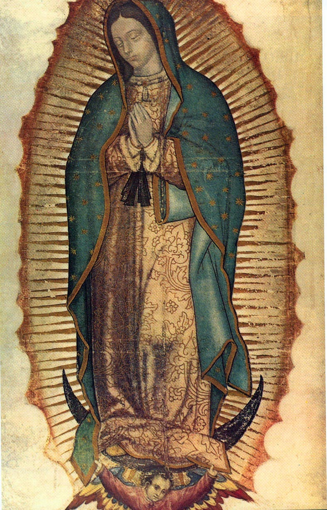
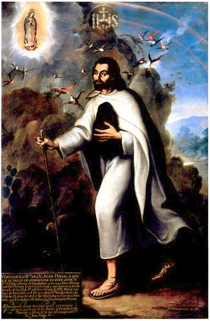

Confissões
De terça a sábado, depois da Missa das 8h. Na Reconciliação recebemos o perdão de Deus e nos reconciliamos com a Igreja.
«Não estou Eu aqui, que sou tua Mãe?»
Nossa Senhora a Juan Diego · Nican Mopohua
Canto à Guadalupana, Mazatlán (México) · gravação da comunidade
Missa7h30
Confissãoconsulte a secretaria
Missa8h
Confissãoapós a Missa
Missa8h
Confissãoapós a Missa
Missa8h
Confissãoapós a Missa
Missa8h
Confissãoapós a Missa
Missa8h
Confissãoapós a Missa
Missa8h · 10h · 18h
Confissãoconsulte a secretaria
De terça a sábado, depois da Missa das 8h. Na Reconciliação recebemos o perdão de Deus e nos reconciliamos com a Igreja.
O sino da torre, restaurado, volta a tocar todos os dias às 12h e às 18h, na hora do Ângelus.
A Eucaristia é a fonte e o ápice da vida cristã. Chegue um pouco antes e reze com a comunidade.
Horários habituais. Em feriados e festas, confirme com a secretaria.
A Igreja celebra a festa em 12 de dezembro. A programação local deste ano ainda não foi divulgada; acompanhe o Instagram da paróquia.
«Homem em oração, família em transformação.» Confirmar com a secretaria.
Depois da Missa das 8h, adoração ao Santíssimo. Confirmar com a secretaria.
A oração da manhã da Liturgia das Horas, antes da Missa das 8h. Confirmar com a secretaria.
A paróquia convidou o bairro para a festa tradicional, nos quatro fins de semana de junho, das 17h às 22h. Convite da paróquia.
Antes de retomar o ano, as pastorais se reuniram para rezar e renovar o serviço à comunidade. Álbum da paróquia.
Tríduo, quermesse e Missa solene para a festa de Nossa Senhora de Guadalupe. Convite da paróquia.
No retiro de 7 de fevereiro de 2026, as pastorais se reuniram para retomar o ano. Veja o álbum no site paroquial.
No Batismo nascemos para a vida em Cristo e somos acolhidos na Igreja. Para batizar seu filho, pergunte à secretaria sobre a preparação de pais e padrinhos, os documentos e as datas.
A pia da primeira igreja, no jardim
Falar com a secretariaNo Matrimônio os esposos firmam uma aliança para toda a vida. Entre batizados, essa aliança é sacramento. Se vocês vão se casar na Igreja, a secretaria orienta sobre a preparação e os documentos.
A nave da igreja, com o quadro de Guadalupe
Falar com a secretariaNo começo eram poucas casas e pequenas chácaras, gente simples e de muita fé. A Missa era celebrada na garagem da casa dos pais do Pe. Newton José Crippa, o primeiro vigário, e uma imagem de Nossa Senhora Aparecida passava de casa em casa para o terço.

Dom Paulo Rolim Loureiro, bispo auxiliar de São Paulo, abençoa a pedra fundamental diante de uma multidão de fiéis. Uma semana depois, o frade mexicano José Francisco de Guadalupe Mojica, ex-ator famoso, celebra no terreno a primeira Missa em honra da Virgem de Guadalupe.
A comunidade inaugura a igreja construída pelo paroquiano Antonio Rosa de Mendonça. Ao lado dela se ergue a torre, doada por Giovanni Adamo. O ícone de Guadalupe, presente dos atletas brasileiros dos Jogos Pan-Americanos de 1955, está dentro.
A primeira igreja pega fogo. Foram salvos o Santíssimo Sacramento, o ícone de Guadalupe, os livros de registro, a cruz de madeira, a torre e a pia batismal. Com o Pe. Paulo Homero Gozzi, os moradores constroem outra igreja no mesmo terreno.
Uma placa de bronze guarda a data: Paróquia N. S. de Guadalupe, 1955–2005. O bairro cresceu, os filhos aumentaram e a Casa da Mãe, como a comunidade a chama, continua acolhendo.
Em 2019, na visita pastoral, Dom José Negri pediu que a igreja, já pequena, fosse ampliada. Em 2025 a paróquia completou 70 anos e apresenta um projeto de nova igreja que prevê preservar a torre.
A torre guarda a memória da primeira igreja.

Em dezembro de 1531, no Tepeyac, no México, Maria apareceu ao índio Juan Diego e lhe pediu um templo, onde mostraria seu amor, compaixão, socorro e proteção. Seu povo a invoca como Mãe dos pequenos. O relato mais antigo é o Nican Mopohua («Aqui se conta»), que a paróquia publica em sua página.
«Não estou Eu aqui que sou tua Mãe?»
Nican Mopohua · tradução do site da paróquia

«Juanito, o mais humilde dos meus filhos, aonde vais?»Nican Mopohua
Maria chama Juan Diego pelo nome, pergunta aonde ele vai e o escuta. Conta com ele mesmo quando ele se julga pequeno demais. Essa atenção aos pequenos lembra o Magnificat (Lc 1,46–55).
Escute alguém que costuma passar despercebido. Dê tempo para que conte o que pensa, sem completar a resposta por ele.
«Ouço todos os seus lamentos e remedio todas as suas misérias, aflições e dores.»Nican Mopohua
Maria pede um templo onde os aflitos encontrem consolo. É o mesmo cuidado de quem, no Evangelho, vai ao encontro de Isabel e fica com ela por cerca de três meses (Lc 1,39–56).
Visite nesta semana alguém que esteja sozinho. Pergunte de que ajuda precisa e combine algo que você possa fazer.
«Não estou Eu aqui que sou tua Mãe?»Nican Mopohua
Juan Diego procura um sacerdote para seu tio, gravemente doente. Maria vai ao seu encontro e o consola. Em Caná, ela também percebe a necessidade dos outros e a leva a Jesus (Jo 2,1–11).
Reze por uma pessoa doente pelo nome. Depois, ligue para ela ou ofereça ajuda a quem cuida dela.
«Aqui estão elas. Recebe-as.»Juan Diego ao bispo · Nican Mopohua
O bispo pede um sinal. Maria envia Juan Diego colher rosas na colina. Segundo o relato, ao abrir a tilma diante do bispo, a imagem da Virgem aparece. No Evangelho, Isabel a chama de bem-aventurada por crer na palavra do Senhor (Lc 1,45).
Retome em oração uma boa decisão que você adiou por medo. Escolha um primeiro passo e dê esse passo hoje.
Nossa Senhora de Guadalupe, rogai por nós.
A Igreja venera Maria de modo distinto da adoração devida somente a Deus. As sugestões de como imitá-la são reflexões desta página, não palavras do relato.
Rua República do Iraque, 1839 · Campo Belo, São Paulo · CEP 04611-004
Pároco: Pe. Jésus Manoel da Silva
(11) 5041-9829 · nsdeguadalupe@santoamaro.org.br
A ficha da diocese não indica o intervalo de almoço; confirme antes de ir nesse horário.